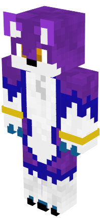

CMDR_Thire
Welcome to my portfolio.
This site is a collection of all my previous builds, work in progress builds and a place to contact me about commissions. Every image of minecraft on this site is of my own creation.
I am a Minecraft builder with aspirations of becoming a programmer. I have worked on a number of builds in the past, and have recieved experience with multiple different themes as a result. Medieval and Sci-fi to name a few.
In the past I have worked with a Youtuber to create the spawn for their server, constructed multiple builds of my own and worked for a build team, but left as my interest in the game lessened. When my interest was peaked again, I began building for a University upon request. The work done for the university has included custom terrain, an underwater dome-based spawn area, a custom Survival games map (WIP) and more to come.
Feel free to look at my past work, which is documented on this website with work in progress pictures of how it progressed. If you wish to contact me, there is a form in the menu. From there, I can give you more information and a quote.